No
Invoke Form Activity
Activity Description:
The Invoke Form Activity is basically an activity inside workflows, wherein the workflow actually invokes the form. The invoking activity is also linked to an approval process. As an example, consider the Leave Application Form. Once an employee fills out the Leave Application Form and submits it, the associated workflow is triggered and accordingly, the Form is invoked. It is sent to the reporting manager for approval. The manager also has the option to make comments and approve/reject the submitted form.
Collaboration Mode: The Invoke Form Activity is said to be in Collaboration mode when the "Individual actor's response collaboration in Output Instance XML" property is configured to collect responses from multiple users.
Note: For generating possible distinct outputs, use buttons of the following Button Type:
- Submit
- Custom (used for submitting the form)
Application Scenarios:
Scenario 1: Opening a different form using Invoke Form activity
When a new employee joins an organization, the HR Person will fill up the employee's details and submits the form. This will go to network team to create mail id and other network requirements.
Scenario 2: Updating Form Parameters with Workflow Variable Values
When an employee submits a Leave Application form, the request will go to the Manager for approval. Manger can view the workflow variable values such as submitted user details like submitted date, user name, and user e-mail. These form parameters are updated with the workflow values while executing.
Workflow Variables for Invoke Form:
Steps to define variables for use in the Invoke Form activity
This section describes how to define variables for use in Invoke Form activities. It gives the syntax for creating the variables and typical examples for different cases.
Variables for capturing WorkItemIds
The Activity IDs for the activity can be retrieved using a variable of type array, with the following syntax:
'^'+CurrentActivity.Name+'WorkItemIds'
For example, ^ManagerFormWorkItemIds
Where 'ManagerForm' is a activity name.
Variables for capturing All Actors' Details
The details of the actor(s) to whom the approval work item gets assigned can be accessed by declaring a variable of type array with the following syntax:
'^'+CurrentActivity.Name+'ActingUsers'
For example, ^ManagerFormActingUsers.
Where 'ManagerForm' is a activity name.
Variables for capturing Responding Actors' Details
The details of the actor(s) submitting the approval/rejection response can be accessed by declaring a variable of type resource with the following syntax:
'^'+HWSActivity.ActivityName+'RespondingUser'
For example, ^ManagerFormRespondingUser.
Where 'ManagerForm' is a activity name.
This variable stores the responded user information. If it is more than one user, it will retrieve the last user details.
Note: For single user, you can declare this variable as Resource type. If task is assigned to more than one user and to get all responded users information, then declare this variable as array.
Variables for assigning queue system variable
To assign queues instead of setting the queue through Assign Queue property, add a variable with a name prefixed by '^', with the following syntax:
"^"+ CurrentActivity.Name + "_QueueVariable".
For example, if the activity name is 'ManagerForm' then declare the variable as ^ManagerForm_QueueVariable in the Start activity with the Type as String. Using the "Update Variable" activity, assign the queue-id (GUID) for this variable in the workflow.
To assign multiple queues, specify the queue-ids with semicolon (;) separator. Skelta.HWS.Queue.QueueCollection class can be used to retrieve queue information.
Variable for Queue Acting Users
You can declare an array type variable to get updated information about the name of the actor to whom an activity gets assigned from a queue.
In the Workflow Variables, define the variable in the following format:
^+CurrentActivityName+'QueueActingUsers'
Example: ^HRFormQueueActingUsers
HRForm is the activity name.
For example the value of the user who acts on the HRForm activity will be stored in the variable. The Approval1 task will be assigned to the same user.
Variable for storing timeout warning value
Suppose if you want to store the timeout warning value for Invoke Form activity in your workflow. The naming convention for the system variable to be declared is
^<ActivityName>ResponseByWarningTimeout
The value returned by the variable will be in UTC format. For multiple user scenarios the highest timeout value calculated for a user will be available in the variable.
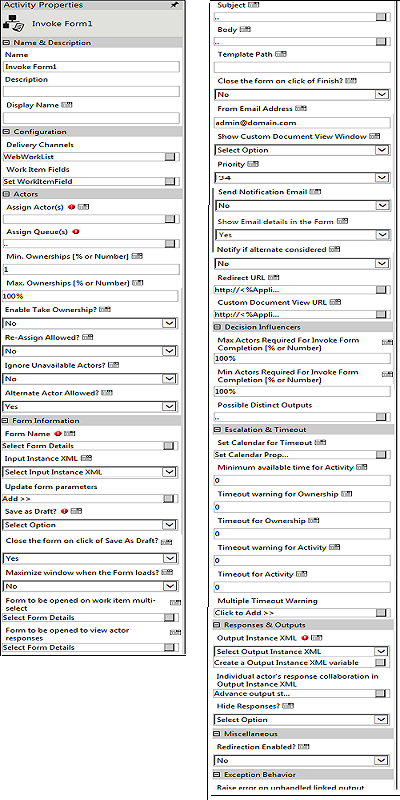
Note: Multiple timeout warnings cannot be tracked using this feature.
Activity Properties:
The Invoke Form activity has to be configured by specifying appropriate values for the different properties in the Activity Properties area. The Activity Properties can be accessed by clicking on the Activity Properties tool in the Tool Bar or by selecting the appropriate option from the right click menu for the Invoke Form activity. The Activity Properties are organized under the following groups of related properties. The properties under each group are described in this topic.
Name & Description
The properties in the Name & Description group have been described below. You can use these properties to specify the name and description for the activity.
Name - This property can be used to specify a name for the activity.
Property Type: Optional (This property needs to be set only if necessary.)
Description - This property specifies a brief description to be displayed for the activity.
Property Type: Optional (This property needs to be set only if necessary.)
Display Name - This property specifies the name to be displayed for the activity in the Web Work Item List.
Property Type: Optional (This property need not be set if the display name is already configured in the Actions.xml. The name entered here overrides any display name that is configured for this activity in the Actions.xml file.)
Configuration
The properties in the Configuration group have been described below. You can use these properties to configure the functionality of the activity.
Delivery Channels - This property is used to specify the delivery channels to deliver this activity to the assigned actor(s). Multiple channels can be specified giving the actor(s) different options to act on the work item.
Property Type: Optional (This property needs to be set only if necessary.)
Steps to set the Delivery Channels property
- To select the Delivery Channels, click the button for the 'Delivery Channels' property to open the property window.
- In this window, the Delivery Channels that have been configured are listed on the left along with a check-box against each channel. Click and select the check-box corresponding to the channel you wish to select. You can select multiple channels by selecting the respective check-box.
- Click Save Channels.
See Invoke Form - Delivery Channels for a detailed description of the Delivery Channels property window.
Work Item Fields - This property is used to set the Work Item Fields to be used to display application data as well as value in variables and content in the Work items list when this activity is executed.
Property Type: Optional (This property needs to be set only if necessary.)
Steps to set the Work Item Fields property
To select the Work Item Fields, click the button for the 'Work Item Fields' property to open the property window.
In this window, the Work Item Fields that have been set are listed in a grid. Click on a row to select the corresponding Work Item Field.
Right-click the row, and select the "SetWorkItemField" from the context menu to set it.
See Invoke Form - Work Item Fields for a detailed description of the Work Item Fields property window.
Actors
The properties in the Actors group have been described below. You can use these properties to specify the actors who will work on the activity and related properties.
Assign Actor(s) - This property is used to specify the actor(s) who has to take up the Invoke Form activity. It is tagged with the Ignore Unavailable Actors property which in turn is tagged with the Alternate Actor Allowed property. This will be explained in detail later.
Property Type: Mandatory (This property must be set if the activity is to be assigned to any actor(s).)
Steps to set the Assign Actor(s) property
- To specify the actors, click on the button for the 'Assign Actor(s)' property to open the property window.
- In this window build an expression to select the actors using the resource properties. Select an attribute from the first drop down list, then select the operator, type of value (Value, Variable, Content, and XMLVariables), and the value for the property from the corresponding drop downs. Select "End" from the last drop down to complete the expression. If you are building a compound expression, you can select one of the logical operators to connect the different conditions that form the expression.
- Add the condition to the expression by clicking the Add button. This will display the expression to the text area.
- You can remove a condition already added to the expression by clicking the Undo button.
- You can also clear an existing expression if necessary by clicking the Clear button. This is useful if you want to clear large expressions in the text area in order to build a new expression.
- After building the expression, click the Update button to save it.
See Invoke Form - Assign Actor(s) for a detailed description of the Assign Actor(s) property window.
See the Using XML Variables section in the About the XML Variable User Interface topic for details on how to use the XMLVariables to build the expression.
Assign Queue(s) - This property specifies the queue(s) to which the Invoke Form activity is to be assigned.
Property Type: Mandatory (This property must be set if the activity is to be assigned to any Queue(s).)
Steps to set the Assign Queue(s) property
- To specify the queue(s), click on the button for the 'Assign Queue(s)' property to open the property window.
- In this window select the queue(s) from the Available Queues list box. You can select multiple queues by selecting with the <Ctrl> key pressed.
- After selecting the required queue(s) click on the [>] button to move it to the Selected Queues list box. You can click on the [>>] button to select all the queue(s) and move them to the Selected Queues list box.
- You can remove any queue from the selected list by selecting it and clicking on the [<] button. You can remove all the queues by clicking on the [<<] button.
- After adding the required queue(s), click the Assign button to assign the activity to the selection
- Click the Close button to close the window without saving the selection.
See Invoke Form - Assign Queue(s) for a detailed description of the Assign Queue(s) property window.
Min. Ownerships [% or Number] - This property, which can be specified as a number or percentage, is the minimum number of actors who should take ownership of the Approval request. This property is related to the 'Timeout warning for Ownership' and 'Timeout for Ownership' properties. To illustrate, when 'Timeout for Ownership' is reached, the activity first checks if the ownership count is less than Min.Ownerships (if it is set). If it is, the work item will be removed from all Work Item lists. If the 'Min.Ownerships' has already been satisfied, then the work item will be removed from the Work Item lists of those who have not taken ownership. If the Min.Ownerships value is 0, then the activity checks if the ownership count is less than Max.Ownerships (if it is set). If it is, the work item will be removed from all Work Item lists. Else the work item will be removed from the Work Item lists of those who have not taken ownership. If both Min.Ownerships and Max.Ownerships are set to 0, then there should be at least one actor taking ownership within the set time, otherwise the work item will be removed from all Work Item lists.
Property Type: Optional (This property needs to be set only if necessary. It is useful in group response scenarios.)
Max. Ownerships [% or Number] - This property (referred to as Max.Ack), which can be specified as a number or percentage, is the maximum number of actors who should take ownership of the Approval request. If 'Timeout for Ownership' is specified and achieved, and the 'Min.Ownerships' is also satisfied, then the activity waits for action from those who have taken ownership. If the Min.Ownerships value is set to 0, then it checks if the ownership count is less than Max.Ownerships. If it is, the work item will be removed from all Work Item lists. Else the work item will be removed from the Work Item lists of those who have not taken ownership. If both Min.Ownerships and Max.Ownerships are set to 0, then there should be at least one actor taking ownership within the set time, otherwise the work item will be removed from all Work Item lists.
Property Type: Optional (This property needs to be set only if necessary. It is useful in group response scenarios.)
Enable Take Ownership? - If this property is set to Yes, then the actor is provided with a Take Ownership option in the Work items list to take ownership of the task. If you are not required Take Ownership option in the Work items list, then set this property as No.
Note: By default, this property is set as No.
Property Type: Optional (This property needs to be set only if necessary.)
Steps to set the Enable Take Ownership? property
- Select Yes or No option from the Enable Take Ownership? drop-down list.
Re-Assign Allowed? - If this property is set then the actor is provided with a Re-Assign option. Using this the approver can re-assign the work item to another resource.
Property Type: Optional (This property needs to be set only if necessary.)
Ignore Unavailable Actors? - This property provides the following options - Yes, Yes - holidays excluded and No. If this property is set to 'No', when the Approval activity is assigned to the actor's Work items list, a check is first done to see whether the actor is available. If the actor is not available then a check is made for an alternate actor assigned to the unavailable actor. Simultaneously the value of the property 'Alternate Actor Allowed' is checked. If that is also set, then the Approval work item is assigned to this actor. If this property is set to Yes - holidays excluded, the workflow engine will ignore the fact that actors are not available if the day is an organization holiday and the output Not Enough Resources will not be generated.
Property Type: Optional (This property needs to be set only if necessary.)
Alternate Actor Allowed? - This property is set to assign a particular task to an alternate actor in the absence or unavailability of any actor.
Property Type: Optional (This property needs to be set only if necessary.)
Form Information
The properties in the Form Information group have been described below. You can use these properties to specify the form details and update the form parameters.
Form Name - This property is used to select form details, by selecting the form name and version.
Or
Use Expression Editor to build the expression to get the form name. This is useful if you do not know the values of the properties at the time of designing the form.
Syntax for Expression Editor is
"{FormGuId,Form version}Form Name" where {FormGuId,Form version} is optional
Property Type: Mandatory
Steps to set the Form Name property
- Click the edit icon corresponding to Form Name. The following screen is displayed.
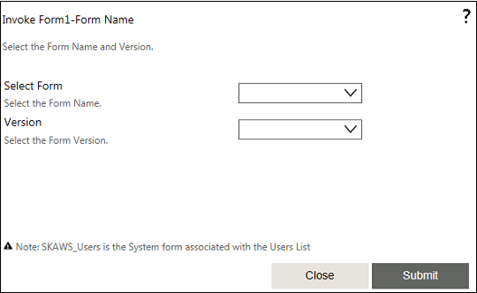
- Select a form from the Form Name drop-down list.
- Select a form version from the Version drop-down list. By default, the latest version is displayed.
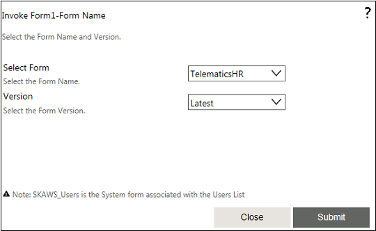
- Click Submit, and then Close.
See Invoke Form - Form Name for a detailed description of the Form Name property window.
Input Instance XML - This property is used to display the data in the Forms which is being used in the Invoke Form activity. When the user views this Form in the work item, the data available in the selected Input Instance XML variable will be displayed, provided the form has the same schema of the selected XML Variable.
or
Use Expression Editor to build the expression to get the XML Variable name. This is useful if you do not know the values of the properties at the time of designing the form.
Property Type: Optional (This property needs to be set only if necessary.)
For instance:
- To show a blank form as part of the Invoke Form activity, do not select an Input Instance XML from the Input Instance XML drop-down list. The form is then displayed with all the fields as blank.
- If the user wants to display an existing list item data, the Input Instance XML variable selection should be of List XML type.
Update form parameters - This property is used to update the form parameter details.
Property Type: Optional (This property needs to be set only if necessary.)
Note: It is important to first select a form. For more information on selecting a form, click Steps to set the Form Name property. Once you select a form, perform the following steps to update the form parameters.
Steps to set the Update form parameters property
A parameter represents a value that is passed to a variable. The parameter value is defined when the variable is declared in the procedure. A procedure can be defined with no parameters, one parameter, or more than one. The part of the procedure definition that specifies the parameters is called the parameter list.
Here, parameters represent the form variables where the user can define while designing the form. These parameters can be used in Forms scripts, in user look up controls to build the filter expression, and as a parameter for the lookup query.
Note: Form parameters values are not stored either in form definition or in database. These values are rendered when the form is rendered.
How to define parameters: To work with parameters, the form should have parameters defined. To define the form parameter, on the corresponding Forms Designer screen, click Edit properties of the form on the top. Click the Advanced tab. You can define the parameter in the Form Properties section. You can define the parameter clicking the Add Row.
How Form parameters can be used?
Form parameter can be used in Form scripts, in user look up controls to build the filter expression, and as a parameter for the lookup query. Below is the sample scenario for how parameters can be used in form scripts.
Suppose in our form we have two controls Employee id & Manager Name. Based on the Employee id entered, we can populate the Manager name. To achieve this, we need to write the script (C#) to update the Manager name value from Form parameters. This parameter value can be updated from workflow.
- Click the edit icon corresponding to Update form parameters. The following screen is displayed.
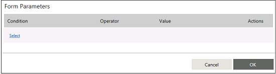
- To select a form parameter from the drop-down list, click the drop-down. The following screen is displayed.
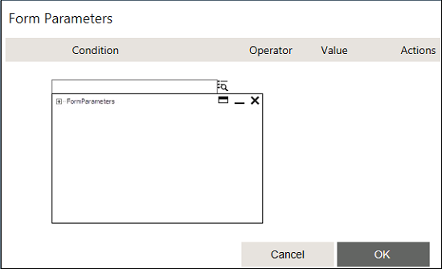
- Expand the tree. The associated parameters of the form are displayed.
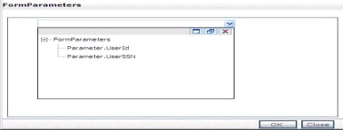
- Select the desired parameter by clicking the name. The following screen is displayed.
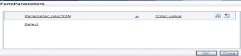
- Click Enter value to display a text box. Enter the new value for the parameter in the text box.
- Select the desired new parameter to be updated by clicking it.
- Click OK. The new parameter is updated.
Save as Draft?
Property Type: Mandatory
Steps to set the Save as Draft property
- Click the Expression Editor to build an expression.
- Select an option (Yes or No) from the drop-down list. Selecting Yes will allow you to save it as a draft, while selecting No will not save it as a draft.
Close the form on click of Save As Draft? - If this property is set as Yes, the edited form will automatically get closed on click of 'Save as Draft?' link.
Property Type: Optional (This property needs to be set only if necessary.)
Form to be opened on work item multi - select
This property enables you to specify the form which needs to be opened when multiple Invoke form work items are selected for processing. This also enables you to select multiple work items related to Invoke Form Activity and act on them from the Work items list or Inbox. The form selected opens on selection of a Work Item or multiple Work Items. On submission, the content gets updated for all the workflow instances.
You need to make sure that the form used for multi-select has the same XML node structure as used for Output Instance XML property. This ensures that the inputs provided in the form get updated to the respective workflow instances output instance XML nodes. Upon this, the update to output instance XML depends on Update output instance XML only for completion maker outputs configured for Possible Distinct Outputs property. Moreover, the behavior is overridden with copying only specific node, when the Invoke form activity is to be used in response collaboration mode .
Note:In the multi-select scenario, the inputs given to the form from the workflow using Input Instance XML property will not be populated when the form is opened.
Property Type: Optional (This property needs to be set only if necessary.)
Scenario
Consider a scenario where a manager receives many leave applications for approval in his Inbox. Instead of opening individual work items and approving or rejecting the same, he would like to multi select the work items and approve or reject them together. Also, rejection reasons and approval comments need to be captured for the work items.
Steps to set the Multi-select work item property:
- Click the edit button corresponding to the Form to be opened on work item multi-select property. The Invoke Form Multi-Select Form opens.
- From the Select Form drop-down list, select the form in which you want the multi-select property to be enabled.
- By default, the Latest version of the form gets selected in the Version field.
- Click Submit.
The selected form opens on selection of a work item or multiple work items through the check boxes. The check boxes are available for selection after enabling the multi – select functionality in the Inbox. On submission, the content gets updated for all the workflow instances. For more information, see the example Selecting and Acting on Multiple Work Items Using the Enable Multi Select option in the Forms and Lists User Guide.
Form to be opened to view actor responses
Property Type: Optional (This property needs to be set only if necessary.)
This property allows you to view the forms submitted to the workflow. Using this property helps you to track errors committed by users while submitting data to the workflow. If nothing is set to this property, then the Form configured for the activity will be used by default for showing the response. If your form has lot of controls and need not have to show the entire details of submission, you can override the default behavior by specifying a form for this property.
Scenario
Scenario: The Telematics Company is a BPO service provider and uses AVEVA Work Tasks workflow in their service for data entry, verification, data correction, approval etc. During data entry, a user has entered some wrong data, but when questioned denies the entry. The verifier requires substantial proof for the data entry user. Verification inputs provided by the verifier need to be viewed later, to check if the data correction done by the data entry user is as per the input provided. In case of verification by multiple users, each user's inputs need to be viewed separately. Provision to see all the forms submitted by the user is provided to the verifier.
The user can view the submitted form data by clicking the Submitted Form Details tab in the activity details of Invoke Form activity under Process Execution view.
The user can also view the data from My Activities link.
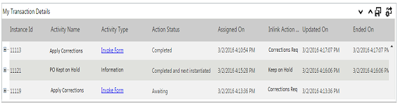
Users can enable security rights to the submitted form details tab in the Set Business Activity Monitoring Rights property while generating BAM reports.
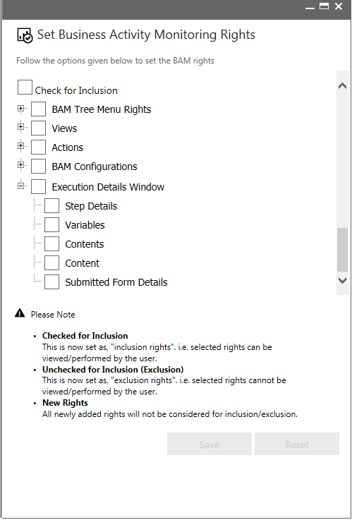
Notification Contents
The properties in the Notification Contents group have been described below. You can use these properties to specify the content used to notify actors about the activity.
Subject - This is the subject of the Approval request. The subject can be customized for each actor.
Property Type: Optional (This property need not be set. If it is not set, the default subject line from the Actions.xml file is displayed.)
Steps to set the Subject property
- To specify the subject, click on the button for the 'Subject' property to open the property window.
- In this window enter the subject text directly in the text editor.
- If you want to customize the subject you can do so using the Field controls to add resource property values. For example, to add a subject that includes the email id of the actor submitting the leave application, you can do as follows: First type in the text "Submitted By". Next select "Variable" and "Variable.SubmittedBy.Email" from the two drop downs for Field and click on the Append button. This will add the placeholder for the variable after the text entered in the text editor. At run-time this placeholder will be replaced by the corresponding value, i.e. the email id.
- You can manipulate the text using the appropriate tools from the tool bar. You can cut, copy and paste text, undo and redo changes, zoom in and zoom out the view as well as print the text.
- You can format the text, if necessary, using the formatting tools. You can make text bold or italic or change the font or size, set text color or background color.
- After adding the subject, click the Update button to save it
- Click the Close button to close the window without saving the subject.
See Invoke Form - Subject for a detailed description of the Subject property window.
Body - This is the actual message body of the Approval request sent to the actor(s). The message can be customized for each actor.
Property Type: Optional
Steps to set the Body property
- To specify the message body, click on the button for the 'Body' property to open the property window.
- In this window enter the body text directly in the text editor.
- If you want to customize the body you can do so using the Field controls to add resource property values. For example, to add a body that includes the name of the actor submitting the leave application, you can do as follows: First type in the text "Hi, Please approve the leave application submitted by". Next select "Variable" and "Variable.SubmittedBy.name" from the two drop downs for Field and click on the Append button. This will add the placeholder for the variable after the text entered in the text editor. At run-time this placeholder will be replaced by the corresponding value, i.e. the name.
- You can manipulate the text using the appropriate tools from the tool bar. You can cut, copy and paste text, undo and redo changes, repeat the last command, zoom in and zoom out the view as well as print the text.
- You can format the text, if necessary, using the formatting tools. You can make text bold or italic or change the font or size, set text color or background color.
- If you want to send the form URL, click Enterprise Console Explorer. In the explorer window, select the either Local URL, Internet or Intranet URL. Click Select of the explorer window.
- After adding the body, click the Update button to save it
- Click the Close button to close the window without saving the body.
See Invoke Form - Body for a detailed description of the Body property window.
Template Path - This property is for specifying standard or customized mail template path. The standard template 'InvokeFormEmail.html' is available in the
[AVEVA Work Tasks Installed Path]\WorkflowElements\Default\en-US\Templates\FormEmailTemplate\ folder.
Example:
<%#WorkflowManagementInstallPath%>\WorkflowElements\Default\en-US\Templates\FormEmailTemplate\InvokeFormEmail.html
Property Type: Optional
Steps to set the Template Path property
Template Path: Locate the default template 'InvokeFormEmail.html' from the path
[AVEVA Work Tasks Installed Path]\WorkflowElements\Default\en-US\Templates\FormEmailTemplate\InvokeFormEmail.html and type the same path in the Template Path property.
or
If user created a template then specify the complete path in the Template Path property.
Example: User should copy the template in Template folder which is in C drive then set the path as C:\Templates\InvokeFormEmail.html
See Invoke Form - Template Path for more information.
Close the form on click of finish? - This property is used to specify whether the form page can be closed or not when the user submits the form through email. If the value is set as No, the form page will not be closed even after the user submits the form. If the value is set as Yes, the form page will get closed after the user submits the form.
Property Type: Optional (This property needs to be set only if necessary. If it is not set, the default value is No.)
From Email Address? - This property is used to specify the email address from which notification messages will be sent for the activity.
Property Type: Optional (This property needs to be set only if necessary. If it is not set, the default value in Actions.xml will be used.)
Show Custom Document View Window - If this property is set to 'Yes', then the Custom Document View Window will be shown to actors in their Work Item Lists. Here, default value is 'No'.
For more details, see Custom Document View URL.
Property Type: Optional (This property needs to be set only if necessary.)
Priority - This property is set to indicate the priority of the approval request. Enter the values 0-33 to set as Low, 34-66 for Medium, or 67-99 for High. The default value is set to 34.
Property Type: Optional (This property needs to be set only if necessary.)
Send Notification Email - If this property is set to 'Yes', then notification emails will be sent to the actors. If it is set to 'Yes-HTML', then the emails will be sent in HTML format.
Property Type: Optional (This property needs to be set only if necessary.)
Show Email details in the Form - If this property is set to 'Yes', then the subject and body of the email will be displayed in the Work Item Invoke Form.
Property Type: Optional (This property needs to be set only if necessary.) The default value is Yes.
Notify if alternate actor is considered - If this property is set to 'Yes', then notification emails will be sent to the actors when an alternate actor is considered.
Property Type: Optional (This property needs to be set only if necessary.)
Redirect URL - This property is used to get the URL of the web page to redirect the client to, in the case of synchronous execution of the activity.
Refer topic Synchronous Execution of Forms in the Lists and Forms Guide for more details.
Property Type: Optional (This property needs to be set only if necessary.)
Note: The redirection feature may not work on the Application Request Routing (ARR) server.
Steps to set the Redirect URL property
- To specify the Redirect URL, click on the button for the 'Redirect URL' property to open the property window.
- In this window enter the Redirect URL directly in the text editor.
- If you want to customize the Redirect URL you can do so using the Field controls to add resource property values. For example, you can add a variable or content that will hold the URL. You can do so by selecting "Variable" from the first drop down and the appropriate option from the second drop down for Field, and clicking on the Append button. This will add the placeholder for the variable in the text editor. At run-time this placeholder will be replaced by the corresponding value, i.e. the URL.
- You can manipulate the text using the appropriate tools from the tool bar. You can cut, copy and paste text, undo and redo changes, repeat the last command, zoom in and zoom out the view as well as print the text.
- You can format the text, if necessary, using the formatting tools. You can make text bold or italic or change the font or size, set text color or background color.
- After adding the Redirect URL, click the Update button to save it
- Click the Close button to close the window without saving the Redirect URL.
See Invoke Form - Redirect URL for a detailed description of the Redirect URL property window.
Custom Document View URL - This property is used to get the URL of the page to which the custom document dlls does a post. The data posted to the page are application, workflow, executionid, executiondetailsid, and workitemid. The posted data can be retrieved as Request.Form["workitemid"].
Property Type: Optional (This property needs to be set only if necessary.)
See Invoke Form - Custom Document View URL for a detailed description of the Custom Document View URL property window.
Decision Influencers
The properties in the Decision Influencers group have been described below. You can use these properties to specify some parameters that influence the outcome of the activity.
Max Actors Required For Invoke Form Completion [% or Number] - This property is used to check what percentage or number of actors should take action for Invoke Form. Decision on the Invoke Form is taken only after the specified number or percentage of actor(s) have taken the action. The activity waits for the actors' action until the 'Timeout for activity' is reached.
Property Type: Optional (This property needs to be set only if necessary. It is useful in group response scenarios.)
Min Actors Required For Invoke Form Completion [% or Number] - This property specifies the minimum number of actors to act on the Invoke Form before the 'Timeout Warning for Activity'. If the activity limit is reached before the 'Timeout Warning for Activity' then the warning message is not shown.
Property Type: Optional (This property needs to be set only if necessary. It is useful in group response scenarios.)
Possible Distinct Outputs - This property enables you
- To specify multiple conditions using form button and form control values and in effect set different outputs for the Invoke Form activity.
- Each output can be marked as completion maker or not. If no output is marked as completion maker, the task remains in the Inbox.
- To set whether the output instance XML is to be updated with the input data of the form for all the outputs or only for the outputs which are of type completion makers.
Property Type: Optional (This property needs to be set only if multiple outputs are required from the Invoke Form activity)
Escalation & Timeout
The properties in the Escalation & Timeout group have been described below. You can use these properties to specify escalation and timeout settings for the activity.
Set Calendar for Timeout - This property is used to specify the calendar to be used to determine activity timeouts.
Property Type: Optional (This property needs to be set only if necessary.)
Steps to Set Calendar for Timeout
- To specify the calendar for timeout, click on the button for the 'Set Calendar for Timeout' property to open the property window.
- In this window select the required calendar by clicking on the calendar name in the tree structure.
- Click the Set Calendar button to set the selected calendar.
- You can specify that a resource calendar should be used, if available, by clicking to check the corresponding check box.
See Invoke Form - Set Calendar for Timeout for a detailed description of the Set Calendar for Timeout property window.
Minimum available time for Activity - This property is used to check the availability of an actor to whom a task must be assigned while executing the activity. The availability check for the actor is done based on the Calendar settings (Global or Resource Calendar). If the time taken to complete the task is within the value set for the Minimum available time for Activity property, then the task will be assigned to that actor. However, if the time taken to complete the task exceeds the value set for the Minimum available time for Activity property, then the task will be assigned based on the values set for the Ignore Unavailable Actors? and Alternate Actor Allowed? properties.
Property Type: Optional (This property needs to be set only if necessary.)
Timeout for Ownership - This property specifies the time until which actors are allowed to take ownership, i.e. the time until which the Approval activity will wait for actors to take ownership. If Min.Ownerships is set and is not reached, the work item is removed from all Work Item lists. If Min.Ownerships is 0, it will check if ownership count is less than Max.Ownerships. If it is, the work item is removed from all Work Item lists. Else the work item will be removed from the Work Item lists of those who have not taken ownership. The work item will remain in the Work Item list of those who have taken ownership and wait for action from them.
Property Type: Optional (This property needs to be set only if necessary.)
Timeout Warning for Ownership - This property specifies the time at which a warning is provided to an actor to take ownership of the work item assigned to him/her. If the actor does not take ownership within this time the engine is notified with a warning. Thus if 'Min.Ownerships' is set, and it is not satisfied before the given time then a warning is sent. If Min.Ownerships is 0, it will check for Max.Ownerships. If the ownership count does not reach the Max.Ownerships value within the set time, a warning is sent. If both Min.Ownerships and Max.Ownerships are not set, this property is ignored.
Property Type: Optional (This property needs to be set only if necessary.)
Understand how Ownership Properties relate to each other:
- Approval activity is assigned to the approvers in the approval list by the workflow engine. Approval activity has a default property set that at least one person has to make Take Ownership of the Approval activity.
- A drop down interface has been provided for the actor to Take Ownership. However, the actor can act on the Approval without taking ownership first, in which case ownership will be considered to be done, i.e. if the actor acts upon the Approval activity without acknowledging, then it is considered as an ownership with action taken.
- After the actor has taken ownership, a link is provided to the actor, which opens a pop up with the details of the other approvers. This is again tagged with the 'Hide Responses?' property. The link will be provided only If 'Hide Responses?' is set as 'No'. The pop up will have details like Approver name, Ownership Status, Action taken, Comments.
- If the 'Min.Ownerships' property is set and the ownership count has reached the set limit [percentage or number] then the 'Timeout Warning For Ownership' property is not considered.
- If the 'Min.Ownerships' property is set and the ownership count has reached the set limit [percentage or number] and the 'Time Out For Ownership' is also reached then the work item is removed from other approvers' Work Item list and the work item waits for action from those who have taken ownership.
- If the 'Min.Ownerships' limit is not reached for the Approval activity, and the 'Timeout Warning For Ownership' has been exceeded then the actor is notified with a warning by including an email or an information activity, with the Timeout Warning for Ownership link to it.
- If 'Timeout For Ownership' is set, if the Approval activity has not reached the minimum limit (Min.Ownerships) and the 'Time Out For Ownership' has been reached, then the work item is removed from the Work Item lists of all the approvers.
- If 'Min.Ownerships' = 0 and if 'Max.Ownerships' is set, the activity waits for actors to take ownership or action until the 'Time Out For Ownership' is reached (if this is set).
- If none of the ownership properties are set then the work item waits until the actor takes ownership or acts upon it.
Timeout Warning for Activity - This property specifies the time at which a warning is provided to an actor to take ownership of the work item assigned to him/her. If the actor does not take ownership within this time, the engine is notified with a warning. Thus if 'Min.Ownerships' is set, and it is not satisfied before the given time then a warning is sent. If Min.Ownerships is 0, it will check for Max.Ownerships. If the ownership count does not reach the Max.Ownerships value within the set time, a warning is sent. If both Min.Ownerships and Max.Ownerships are not set, this property is ignored.
Property Type: Optional (This property needs to be set only if necessary. It is useful in setting escalations.)
Timeout for Activity - This property's value is used to decide until what time the work item should wait for user action. If properties such as Max.Ownerships, AAA, AL are set, once the property values are reached the work item is removed from the Work Item lists of all the approvers. When the timeout is reached, the following checks are made: If AL is set, when the activity count i.e. the no. of approvals or rejections (AC) < AL, then the timeout for activity is performed and the activity is removed from all Work Item lists. If AC > AL, it checks with the no. of approvals or 'decision count' (DC) and AAA. If DC >= AAA (if it is set), the work item is considered approved; otherwise, it is rejected. If AAA = 0 and if DC >= AL, the work item is considered approved; otherwise, it is rejected. If AL = 0 and AC < AAA, then the timeout for activity is performed and the work item is removed from all Work Item lists. If AL = 0 and AC > AAA, it will check with DC. If DC > AAA it is approved; otherwise, it is rejected. If AL = 0 and AAA = 0, then if DC is at least 1, then it is considered approved; otherwise, it is rejected.
Property Type: Optional (This property needs to be set only if necessary. It is useful in setting escalations.)
Multiple TimeOut Warning - This is used to set recurring timeout warnings that will be sent to the actors who have to take action. To set multiple timeout warnings, click the 'Multiple TimeOut Warning' button in the Properties pane for the Approval activity. A new window pops up. In this window, set the interval for the recurring warning as well as the output message. You can also set the Recurring Time Interval. This can be used to set a different recurring time out after the first timeout happens. For example, if 'Time Interval' for the property is set as 7 days and 'Recurring Time Interval' is set as 2 days, then the first time out will happen after 7 days and there will be a recurring time out every second day after the seventh day (first) time out.
Property Type: Optional (This property needs to be set only if necessary. It is useful in setting escalations.)
Steps to set the Multiple TimeOut Warning property
- To set the multiple timeout warning, click on the button for the 'Multiple TimeOut Warning' property to open the property window.
- Enter the time interval for the timeout in the Time Interval field
- Select "Yes" from the drop down for the Recurring? field if you want the timeout warning to recur. Select "No" otherwise.
- Enter the output message corresponding to the timeout warning in the Output field.
- Enter the time interval for the recurring timeout in the Recurring Time Interval field.
- After entering the content details, click the Add Row button to add this timeout setting and display a new row for entering another timeout setting.
- Remove rows if necessary by selecting them and clicking the Remove Selected button.
- After specifying the timeout settings, click the Update button.
See Invoke Form - Multiple Timeout Warning for a detailed description of the Multiple TimeOut Warning property window.
Responses and Outputs
The properties in the Responses and Outputs group have been described below. You can use this property to specify the responses and outputs of the activity.
Output Instance XML - This property is used to get the data from the Forms which the user has edited from the Work item page. Depending on the type of XML variable selected in this property, the XML data is stored, provided the output instance XML has the same schema of the Form.
or
Use Expression Editor to build the expression to get the XML Variable name. This is useful if you do not know the values of the properties at the time of designing the form.
Property Type: Mandatory (This property must be set in order to use the data entered by the user in the workflow)
For instance:
- If the Output Instance XML is of type XML List , then the XML data received from the Form is stored in the respective List depending on the list item scope defined for the XML Variable.
- The list item scope should be New , if a new list item to be added with the Form data in list.
- The list item scope should be Current, if the list item that initiated the workflow has to be updated.
- The list item scope should be List Query, if a specific list item to be updated in the list.
- If the Output Instance XML is of type XML Document, then the XML data received is stored in the workflow itself.
Display an existing list item data using Invoke Form and then store the updated Form data in a different list (destination list): An intermediate XML Variable is required for such scenarios. Use an Update Variable activity before the Invoke Form activity, to assign the Source list XML values to the Intermediate XML Variable, Then use this intermediate XML variable as Input Instance XML and destination XML List as Output Instance XML.
Note: Source, destination list, and Intermediate XML variable should have the same schema.
Steps to set the Output Instance XML property
- Select an existing output XML variable from the Output Instance XML drop-down list, OR
- Click the edit button corresponding to Create a Output Instance XML variable. The following screen is displayed.
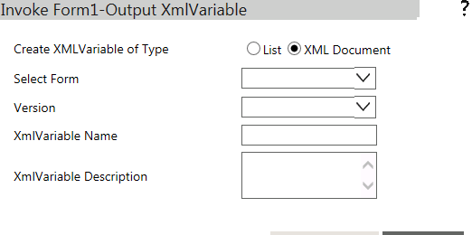
- Select a form from the Form Name drop-down list.
- Select a version from the Version drop-down list.
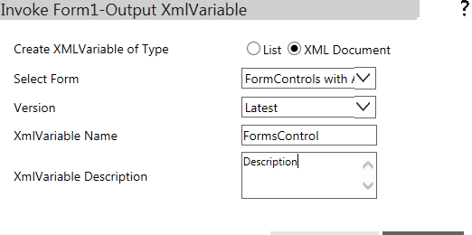
Note: By default, the XML Document option is selected and the screen as shown above is displayed. If the List option is selected, the following screen is displayed. The difference, as you can notice, is that the XML Document option allows you to select a form, whereas the List option allows you to select a list.

Note: On this screen, select a list from the List drop-down.
- Enter a name for the output XML variable in the XMLVariable Name field.
- Enter a description for the output XML variable in the XMLVariable Description field.
- Click Submit.
- The output XML variable is created. The created output XML variable will be available in Start activity.
Individual actor's response collaboration in Output Instance XML
Property Type: Optional (This property needs to be set only if necessary.)
For more information, see Invoke Form - Individual actor's response collaboration in Output Instance XML.
Hide Responses - If this property is set to 'No', then actors can see the responses of other actors in a group approval scenario. To view these responses that is, ownerships, approvals, or rejections, select the 'Take Ownership' option. This will open a new pop-up window with the responses of other actors who have taken ownership.
After the actor has taken ownership, a link is provided to the actor, which opens a pop-up window with the details of the other approvers. The link will be provided only if 'Hide Responses' property is set as 'No'. The pop-up window will have details such as Approver name, Ownership Status, Action taken, Comments.
Property Type: Optional (This property needs to be set only if necessary. It is useful in group response scenarios.)
Looping Behavior
The property in the Looping Behavior group has been described below. You can use this property to specify the looping behavior of the activity.
Loop through this action if output is - This property is used to specify the condition for looping the activity by selecting an activity output from the drop down.
Property Type: Optional (This property needs to be set only if necessary.)
Miscellaneous
Redirection Enabled? - This property enables redirection. When this property is set to Yes, the workflow redirects the user to the URL in the Redirect URL property in the next activity.
Activity outputs:
The Invoke Form Activity returns the following values -
Action Completed: Displayed when the action is completed when you submit the form.
Not Enough Resources to Acknowledge: Displayed when the filter condition did not yield enough actors to whom the request can be sent.
Timeout - Acknowledge: Displayed when the specified minimum number of actors did not take ownership of the request in the given time.
Timeout - Action: Displayed when some or all of the specified actors did not perform the required activity in the given time.
Timeout Warning - Acknowledgement: Displayed when a warning is generated that the specified minimum actors have not taken ownership of the request in the given time.
Timeout Warning - Action: Displayed when a warning for timeout is generated because some or all the actors did not perform the required activity in the given time.
Note: The following outputs will return only if user assigned tasks to a queue user:
Resource Unavailable for Queue - If a queue is assigned to a task and if there are no resources available in the queue then this output will get triggered.
TimeOut for Queue Task - This output will get triggered when the task in the queue is not picked by any users within the queue escalation time resulting the completion of that task.
Timeout Warning -Queue - This output will get triggered when the task in the queue is not picked by any users within the queue escalation time resulting in sending a warning output. However, the task will still be sleeping.
Timeout Warning -Queue Participant - This output will get triggered when the task in the queue is picked by user but still not acted on that task within the queue escalation time out settings resulting in triggering a warning output. However, the task will still be sleeping.
Exception Behavior
Each activity has the Raise Error on Unhandled Linked Output property on click of which, it shows all the default configured mapped error outputs in red with their check boxes selected.
See Mapped Error Outputs for more details.
Note: In Inbox, navigating between items without subject is not supported for the Invoke Form activity.